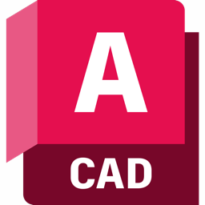

🏳️⚧️ 欢迎，这里是小锂
(名字来源于一种药物——碳酸锂)
💻 我的设备
因为我喜欢把每个小设备都打理得妥妥当当，它们都是我日常学习、创作、编程时的好伙伴～
⌨️ 键盘：RK R65
🖱️ 鼠标：MCHOSE A7 Pro
🎧 耳机：ROG 降临 2
💻 笔记本：ASUS 天选 3 Plus
🧪 自我介绍
嘿呀，欢迎来到我的小世界！我是Li2CO3，虽然它是一种精神药物，但它代表的是我生活中的一份独特色彩。作为药娘1，我总是试图在挑战中找到乐趣，在生活中的“bug”里也能看见一丝可爱的光亮。🌸
编程这条路上有时候挺孤单的，但正是每一次调试、解决问题的成就感，让我觉得所有的辛苦都是值得的！我喜欢在这条路上不断学习，虽然偶尔有点小迷茫，但每次跨过难关时的喜悦，简直像发现了一个彩蛋！💻💖
希望在这里和你们分享我的学习历程和点滴心情，既有计算机的技术分享，也有一点关于我作为药娘的感悟。一起快乐学习，遇到难题也能笑着走过！😊
🛠️ 我的技能乱炖
🎬 影视后期
我的影视后期技能主要来源于Adobe全家桶，基本上什么都能做一做～
💻 编程语言
学了好多语言，但每次碰到bug的时候，脑袋总是短路一下🤣
🎨 三维建模
每次做建模的时候，感觉自己像在做小艺术品，虽然有时候挺复杂的，但还是很有成就感！



🧪 计算机仿真
计算机仿真就像是给模型加上魔法，可以让现实变得更有趣！
✍️ 编辑器 / IDE
这些工具我都很喜欢，每次在编辑器里工作，总觉得有点魔力～
💡 我的neovim配置文件在这里，我将其称为 Li2CO3VIM
🖥️ 喜欢的操作系统
我超级爱Arch Linux，每次启动它都觉得自己超强！
💻 终端环境
没有终端，我的生活好像少了点什么呢～
🍥 还有这些但是不知道该分什么类
这些小工具也常常派上用场，虽然它们都不太属于某个大类，但它们是我学习和工作的小伙伴！
✨ 我们的存在，就是对恶意最大的反抗。
-
药娘是中国大陆网络用语，指通过激素疗法来维持女性特征的跨性别女性。 ↩︎